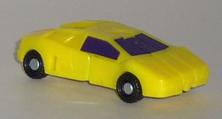
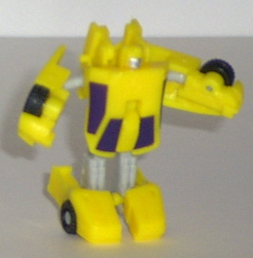
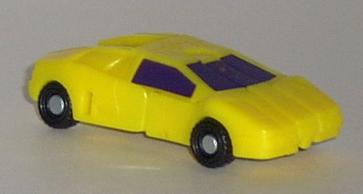
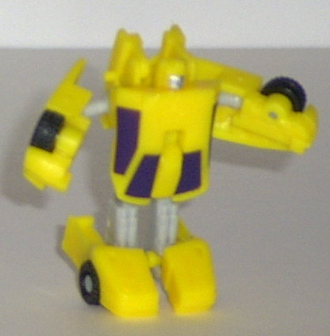
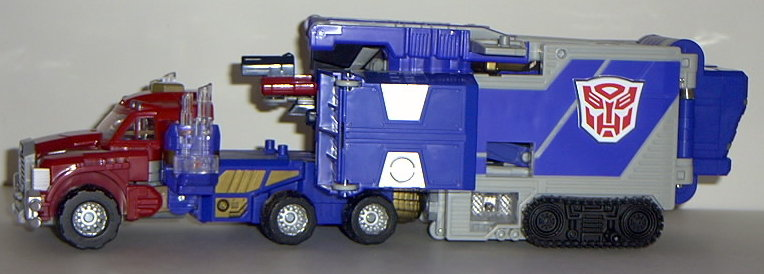
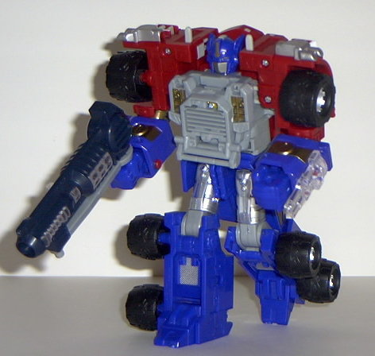
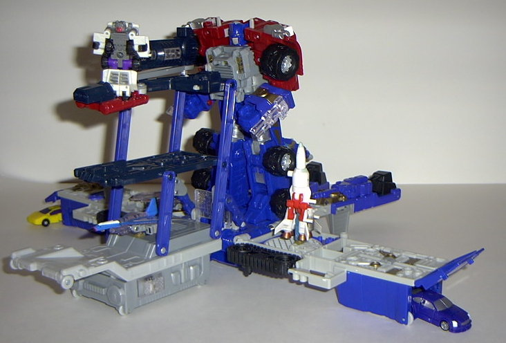
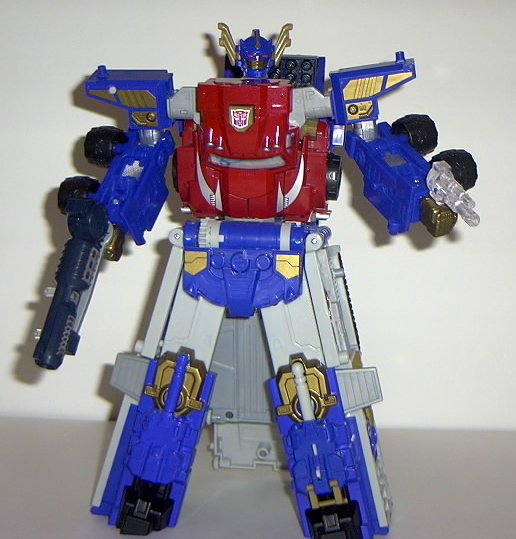

Sparkplug
Sparkplug
 
Allegiance : Minicon
Size : Mini-Con
Difficulty of Transformation : Easy
Color Scheme : Flat yellow, light gray, very dark purple, and some black and silver
Rating : 6.1
Sparkplug


Allegiance
: Minicon
Size
: Mini-Con
Difficulty of Transformation
: Easy
Color Scheme
: Flat yellow, light
gray, very dark purple, and some black and silver
Rating
: 6.1
Vehicle mode is a sportscar.
This mode is very.... yellow... but still pretty good. No robot extras
at all, and a nice, solid mold, with lots of good mold "tech" detailing.
The paint detailing, though, is another story- there's absolutely none
of it in this mode except for the windows- which, instead of being painted
the sensible black, are actually painted a very dark shade of purple. Er...
what? Since when do cars have purple windows? Anyway, the Minicon port
is on the underside of this mode, slightly to the rear of center. The Minicon
symbol is smack dab in the center of the car's roof.
Sparkplug's robot mode
wouldn't be that bad, if it wasn't for one glaring problem: his feet look
so STUPID. What is he, a clown? 'Cause that's how big and long his feet
are. Not to mention the wheels on the bottom of them look a little goofy
in this mode, and they cause him to lean forward slightly. Considering
how big his feet are, you'd think that his legs would be a little longer
to sort of blend the proportions a bit, but they're rather short compared
to Sparkplug's big chest and feet. He looks like some kinda dwarf, here.
(Well, okay, he's a Minicon, but you get what I'm saying.) Sparkplug has
a nice face, but that one patch of silver paint doesn't bring out the good
detailing that well- yes, he still suffers from a lack of paint apps in
this mode, too. At least his look all right, even if the fists are a bit
small... Oh, and Sparkplug has articulation in his shoulders, elbows, and
feet. No leg articulation at all, meh.
Sparkplug has a pretty
cool vehicle mode, but his robot mode has very odd proportions, what with
the big feet and chest and short legs. He also suffers from a severe lack
of paint detailing. He's slightly under average as Minicons go.
 Optimus
Prime (Super Base)
Optimus
Prime (Super Base)


Allegiance
: Autobot
Size
: Super Base (~$40 U.S.)
Difficulty of Transformation
: Hard
Color Scheme
: Light gray, dark blue,
silver, brick red, black, dull gold, dark green-blue, and some transparent
plastic, white, mustard brown, and red
Powerlinx ports
: 13 (2 gimmicked)
Rating
: 6.9
*2018 UPDATE/BUYER BEWARE: After several years, the dull gold plastic on Armada Optimus Prime has shown reports of mild-to-moderate Gold Plastic Syndrome (crumbling). Be aware of this when purchasing this toy.*
Vehicle mode is a futuristic
monster truck with a trailer. This mode is decent, but there's two rather
major problems it has. For one, the "trailer" is pretty questionable. It
just looks like a bunch of panels of... stuff... crushed together into
a rectangular prism. Whee. All of those panel-tops coming out of the front
side of the trailer don't help much, either, although at least that small
machine gun emplacement coming out of the center looks a little cool...
The second main problem is that the cab has the golden super robot fists
sticking VERY blatantly out of the back. Having the trailer on masks this
a little, but if you have the cab by itself... uigh. Besides that, the
cab part of the truck itself looks pretty cool, with some nice all-around
detailing, and some cool silver "swipes" done on the hood. Prime's got
a very wiiide cab, here- in fact, if it were any wider, it would look goofy.
The wheels are nicely treaded (albeit smooth enough where they don't roll
very well), and they have "Monster Prime Convoy" engraved on them- no doubt
his Prime's Japanese name. Prime has very short smokestacks made of clear
plastic, which always manage to fall off if you so much as touch them.
I cannot TELL you how annoying this gets, ugh. And although the transparent
plastic used for the windows is nice, it kinda blatantly shows off the
electronics inside... Prime has no gimmicks in this mode, but he does have
four static Powerlinx ports on the top of his trailer.
When you transform Prime
into his regular robot mode (shown above), something extraordinary happens-
the cab sends a radio signal to the trailer (if you have it switched on),
which folds out into a base for Minicons (shown below)! Unfortunately,
this doesn't always work 100% of the time on mine- more like 80% of the
time- so you sometimes have to "re-transform" Prime to get it to work.
I've been told that this has been fixed in later batches of the toy.
As for the regular robot
mode, it's probably the coolest mode of the toy. It's very distinctly Prime-ish,
with the standard face, color scheme, and, of course, alt mode. It's also
very distinctly original in its design. Nice, broad shoulders give way
to big blue fists, and he almost has a samurai-esque "skirt" around his
waist. There's also some neat details molded in- open up his grill chest
to reveal a MATRIX inside! (No, sorry, you can't take it out.) Prime can
hold his main "big" gun in this mode, and a smaller gun made up of his
smokestacks. Nifty. Prime also has a cool "talking" gimmick- push down
on a tab on his head and his mouthplate moves, heheh. Unfortunately, Prime
is rather unarticulated for such a large toy- his head, shoulders, elbows
(at two points), and knees can move, but all of them can only move in one
direction except for the latter. Not to mention that his legs cannot seperate
without triggering the base auto-transformation, which is pretty annoying.
He has limited forward-to-center hip movement as well, but it still leaves
him rather brick-like for such a large toy. Oddly enough, Prime has no
Minicon-activated gimmicks in this mode. He has three Minicon ports on
his body- one on the lower part of his left leg and two on his, er, butt-
but they're all static. I guess it's to show that Prime doesn't use the
Minicons as slaves, but as helpers for his base, I guess.


Speaking of the base
mode, well, there it is. And no, you're not seeing things- it looks like
a bunch of splayed out panels, which is exactly what it is. Hardly a convincing
"base". But then again, trailer bases rarely are. Anyways, appearances
aside, this thing's got gimmicks galore. It's got some static Minicon ports
here and there, but two actually do something- the one under the mutli-level
part of the base, if you slide the Minicon attached to it backwards, activated
a firing sound. Why, I have no idea. So, um, moving on... If you place
a Minicon on the gray Powerlinx port behind and to the right of the multi-level
platform, a little gun pops up a couple inches away! It rotates around,
and it's cool. On the "leg panel" part of the base, one of the legs has
a missile launcher that rotates up and can fire a missile. The other one
can't do become a missile launcher, presumably because of cost-cutting
measures. As for the other two "wings" of the base, both of them have a
chamber that you can store Minicons with wheels in, and them launch them
out via a lever (well, in one case, on the other case you just open the
door and push it out). Speaking of which, for a $40 toy, this sure does
have an awful lot of cost-cutting measures in it... Anyway, the top floor
of the multi-level portion of the base has a flip-out platform with a machine
gun on it, with a little place for you to put Minicons on it. Or rather,
you COULD put Minicons on it, if the thing didn't sag under their weight
and have them fall to the ground almost every time because of it. *sigh*
Oh, and you can put Optimus in the middle of this thing and attach his
gun to the top of the platform. Press down on a buttom next to a transparent
read-out display at the center of the base, and a "chhhtransform" sound
will emit from the base, and a light will blink.
And now, transform the
Optimus' regular form into the top part of the Super robot form, and the
trailer will automatically change into... pants? Yes, the trailer transforms
into pants for Prime! Well, okay, so the auto-transformation doesn't work
that well this time... it usually gets stuck, so you have to manually hold
it up while it the trailer completes the transformation... and only the
auto-transformation only works about 30% of the time on mine, although
I've been told that it's been fixed in later releases... and, oh, yeah,
the thing FALLS APART WHEN YOU CONNECT THE REST OF PRIME TO IT. Yes, that's
right, this whole freakin' huge trailer is only kept together by two little
tiny pegs, so the thing collapses in on itself if you try to connect the
cab portion to it without holding the trailer together manually as you
do the link up. And if you do much of anything with Prime in this mode,
he collapses in on himself as well. So you're pretty much stuck with a
bad-looking statue in this mode- and statue it is. His legs can't move
at all, and neither can his waist. His shoulders have VERY limited movement,
as well. So basically only his head and elbows have unrestricted movement.
How fun. Well, once you finally manage to get Prime stable in this mode,
you realize something- it's not worth it. Prime looks like crud. His legs
are immovable wide blocks of stuff, and he has a huge hollow place in between
the two parts of his upper back. His shoulders aren't solid-looking at
all, and his regular robot hands just stick out of the back unceremoniously.
And although is light-up fist gimmick works by pressing the buttom on his
right shoulder, it can't light up the
Star Sabre
all the way, which is what it was DESIGNED to do. Although it does light
up his guns alright... And if you press the Autobot symbol on his chest,
one of three things will happen: 1. He'll collapse in on himself again
because you touched him. 2. Nothing will happen. 3. Occasionally, a "transform"
sound will activate, but this only happens if you have everything juuuust
right and you make sure not to put too much pressure on poor ol' delicate
Prime. So, um, there goes that gimmick.... Well, at least Prime's face
and arms look cool. That's all I really can say positive about this mode,
though...
Poor Armada Prime. Great
idea, bad carrying out of said idea. The auto-transformation gimmick may
be fun to watch a couple of times, but you'll quickly find out that it
is NOT worth it. Every single mode of this toy suffers from it: The vehicle
mode has a cruddy-looking trailer; the base mode looks like a splayed-out
pair of pants; the regular robot mode has poor articulation because of
the various buttons and transformation sequences needed in it to produce
the auto-transformation of the trailer; and don't even get me started on
the super robot mode. At least his mold and paint detailing is great, and
his regular robot mode is pretty good if you ignore his limited articulation.
I expected a toy with FIXED problems when I pay $40 for it, and I didn't
get it with this one. Unless you really like the auto-transformation gimmick
or his combining ability, I'd get the smaller
Super-Con
version instead.
Review by Beastbot